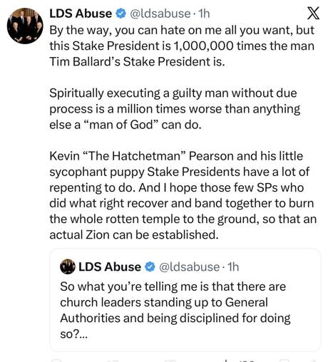
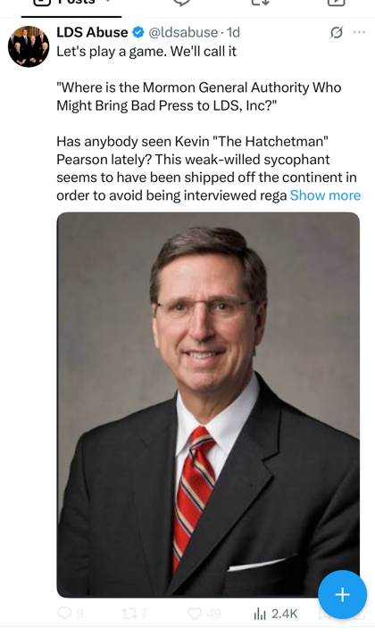

Fellow Travelers
The SRA Loop showed Tim Ballard, Jason Preston and Latter Day Chad passing one story between them. They are not alone. This page adds the next ring out: the accounts that repeat, extend and cross-promote the same claims, starting with the loudest of them on X.
As before: every quote is the speaker's own, from their public posts. "Fellow traveler" means an account that amplifies the same narrative, not proof of coordination. Latter Day Chad himself says they "aren't really coordinating together."
Justin Riggs, “LDS Abuse” on X
@ldsabuse on X, “LDS Abuse,” more than 32,000 posts. Instagram ldsabuseonx.
The SRA Substack Investigations in Ritual Abuse lists him first among those who have “taken the topic and run with it,” ahead of Latter Day Chad and Jason Preston, and credits him with announcing that Candace Owens would take up the Utah ritual-abuse story.
He also works the comment sections, inviting people who say they are survivors to “tell me your story.”
The stake-president story, one size bigger
In The SRA Loop, one stake president went from “no longer a stake president” to “excommunicated” in five days. On X, Riggs takes the next step: he makes it plural and names the man to blame.


“By the way, you can hate on me all you want, but this Stake President is 1,000,000 times the man Tim Ballard's Stake President is… Kevin ‘The Hatchetman’ Pearson and his little sycophant puppy Stake Presidents have a lot of repenting to do. And I hope those few SPs who did what right recover and band together to burn the whole rotten temple to the ground.”
@ldsabuse on X
“Has anybody seen Kevin ‘The Hatchetman’ Pearson lately? This weak-willed sycophant seems to have been shipped off the continent in order to avoid being interviewed regarding his role in multiple Utah Stake Presidents being excommunicated for standing up to him.”
@ldsabuse on X
“…the 51 pages of documents I have showing that top Mormon leaders, including the current prophet, knew they were working with an evil sexual predator named [name withheld here], but chose to ignore that fact…”
@ldsabuse on X. The person he accuses is a private individual, so we don't repeat the name.
What changed: one released stake president became “multiple Utah Stake Presidents being excommunicated,” and the cause became one General Authority, Elder Kevin Pearson. Pearson is also the General Authority Ballard singles out in Backfire. None of these posts shows a document, a name or a date for the “multiple” stake presidents.
Riggs, tied in
Instagram's Collaborators feature puts one post on several accounts at once, and every co-author has to accept the invitation.
Riggs is not just saying similar things. He co-publishes with Latter Day Chad, the account Ballard tells his 503K followers to follow, and Chad co-publishes with Ballard (April 2026, see The SRA Loop).
That makes the chain direct: Ballard ↔ Latter Day Chad ↔ Riggs, with the SRA Substack naming Riggs, Chad and Preston together. Transcendental_Mormon_Mystic, a co-author on both posts, has since disappeared from Instagram.
Who's in the circle
| Voice | Where | Role |
|---|---|---|
| Tim Ballard | Facebook (503K), Instagram, X | Reach; reposts others' first-person accounts with scripture-rebuke captions; tells followers to follow Latter Day Chad |
| Jason & Alexia Preston | We Are The People Utah | The stake-president story; “Shadows of Power” series credited by the SRA Substack |
| Latter Day Chad | Instagram, Zion Media | SRA claims on stream; co-author with Ballard and with Riggs |
| Shane Baldwin | Zion Media | Runs the channel Chad appears on |
| Justin Riggs | X @ldsabuse, Instagram ldsabuseonx | Daily X posts against General Authorities; grows the stake-president story to “multiple” |
| Investigations in Ritual Abuse | Substack (byline “Go El”) | The SRA newsletter that lists the others as allies |
| Brett Henry (“Bearded Realtor”) | Facebook, Instagram | “Ritual Abuse Utah — Documents only” reels |
| Candace Owens, Shaun Attwood | National podcasts | Wider reach, named by the Substack |
When Backfire actually started
Ballard's Backfire is often described as one three-hour video from this September. His own X account shows it began as a series last November, the same months he started telling his audience the Church was infiltrated. The posts below were compiled with Grok from @TimBallard:
| Date | Post | What |
|---|---|---|
| 19 Nov 2025 | x.com/TimBallard/…2813 | Episode 1, first public release |
| ~1 Dec 2025 | x.com/TimBallard/…8367 | Episode 2 announced |
| 6 Dec 2025 | x.com/TimBallard/…9513 | Episode 3, “The Kangaroo Court” |
| 1 Jan 2026 | x.com/TimBallard/…3974 | Remaining episodes plus a parallel series, “Rescue Fraud” |
For a timestamped transcript and claim-by-claim checks of the video, see the Backfire tracking repository.
Before you share
A claim doesn't get truer by being repeated across more accounts. In everything shown here, the only documents anyone has actually displayed are the Prestons' February trespass letter and these public posts. The “multiple stake presidents,” the “51 pages” and the ritual-abuse accusations are all asserted, not shown.
If a child may be in danger in Utah, call the DCFS child abuse hotline:
1-855-323-3237
Or dial 911 in an emergency.
- The SRA Loop (companion page): antmerrill.github.io/backfire-tracking/sra-loop.html
- @ldsabuse posts on X, captured Sep 22–23, 2026 (screenshots)
- “S6E89 | Justin Riggs – How Litigation Economics…” (YouTube, @imaginationpodcastofficial)
- Instagram Collaborators sheet with ldsabuseonx and latterdaychad (screenshot)
- Investigations in Ritual Abuse, “Candace Owens on David Leavitt,” Sep 15, 2026: 1830goel.substack.com
- @TimBallard posts on X, as listed above
- Backfire tracking repository: github.com/AntMerrill/backfire-tracking